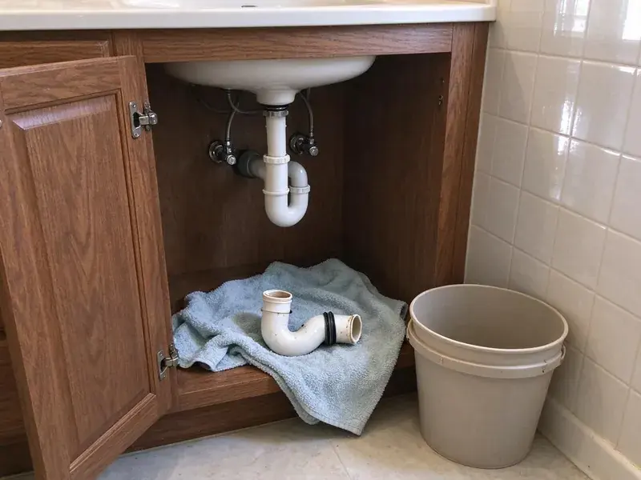

Copper Pipe Leak Repair in Waianae, HI
Don't let a copper pipe leak upend your home in Waianae, HI. HKL Plumbing offers prompt, professional service to fix it right.
- Repipe Options When Needed
- Expert Copper Soldering
- Durable Copper Repairs
- Thermal Imaging Leak Detection

Leaking Copper Pipe? Get a Lasting Repair in Waianae, HI.
We bring copper, press fittings and leak detection gear so most repairs are done on the first visit.
Your Go-To for Copper Pipe Leak Repair in Waianae, HI
HKL Plumbing specializes in diagnosing and repairing copper pipe leaks for homeowners across Waianae, HI. From pinhole leaks to burst pipes, we use modern tools and proven techniques for a lasting repair, protecting your property from further water damage.
Our expertise includes:
- Soldered and ProPress copper repairs in tight walls and attics
- Water pressure, grounding and bonding checks after every repair
- Expert repair for pinhole leaks, corrosion and burst pipes.

Additional Plumbing Repair Services in Waianae, HI
We offer expert plumbing repair services across Waianae, HI to fix leaks, restore flow, and keep your system running smoothly.


Customers
Why Choose HKL Plumbing for Copper Pipe Leak Repair in Waianae, HI?
We do more than solder over a hole. We help you understand why the copper failed and what you can do to protect the rest of your system.
- Quality Copper, We repair with Type L copper or press fittings for a stronger section than the original.
- Quality Materials, We use only high-grade copper and fittings for repairs, delivering durability and longevity.
- Honest Advice, We tell you when repeated pinholes mean a repipe will save money.
Citywide Coverage
Whether you're in the heart of Waianae or on its outskirts, our team is ready to respond promptly to your copper pipe leak emergency. We provide consistent, high-quality service across our entire service area.
Experienced Team
Our team understands the corrosion patterns that hard water, chlorine and high velocity create in copper. That experience helps them spot weak pipe before it leaks.
Safety-First Approach
Safety is our top priority for every copper pipe leak repair. We adhere strictly to all local Hawaii plumbing codes and industry best practices so your home's plumbing system is not only functional but also safe.
Trusted Certified Waianae Plumbing Services Professionals
At HKL Plumbing, we take pride in providing certified plumbing services throughout Waianae, HI. Backed by recognized industry credentials, our experienced plumbers combine technical skill with genuine customer care. Whether it is repair, installation, or maintenance, we follow strict safety and quality standards to deliver lasting results you can trust.
Call Us Now PHCC Plumbing Contractor Recognition
PHCC Plumbing Contractor Recognition Better Business Bureau (BBB) Accreditation
Better Business Bureau (BBB) Accreditation Angi Certified Pro
Angi Certified Pro ISO 9001 Quality Management Certification
ISO 9001 Quality Management CertificationPrecision Copper Pipe Leak Repair Services in Waianae, HI
Underground Copper Pipe Leak Repair in Waianae
Leaking underground copper pipes can lead to serious water loss and foundation issues, especially after heavy rainfall. We use trenchless repair methods where possible to fix or replace damaged underground copper lines, reducing the need for extensive excavation. This preserves your landscaping and minimizes the overall impact on your property.

Copper Pinhole Leak Repair in Waianae
Pinhole leaks are tiny holes that form when the inner wall of copper pipe erodes or pits. They often appear in thin Type M pipe and on hot water lines where velocity and temperature are higher. We cut out the affected section and replace it with new Type L copper or a PEX transition. While the wall is open, we inspect nearby pipe for discoloration or thinning.
Under Slab Copper Leak Repair in Waianae, HI
Leaky copper pipes under your concrete slab foundation are a serious concern for many homes in Waianae, HI. These leaks can lead to serious foundation damage, higher water bills and mold growth. Our experts use advanced leak detection equipment, including acoustic and thermal imaging, to pinpoint under-slab leaks without invasive demolition. Once located, we offer solutions ranging from isolated slab penetration and repair to rerouting the affected line above ground, limiting disruption and cost.
Commercial Copper Pipe Repair in Waianae
Many commercial buildings use larger diameter copper for domestic water supply. Leaks in these systems can affect multiple tenants and require careful shutdown planning. We repair commercial copper lines with press fittings to reduce downtime and avoid hot work permits where possible. We coordinate schedules with building management.
Commercial Copper Pipe Leak Services in Waianae, HI
Businesses in Waianae rely on dependable plumbing systems. A copper pipe leak in a commercial building can cause costly downtime and property damage. HKL Plumbing provides fast and efficient commercial copper pipe leak repair services, understanding the need for minimal disruption to your operations. We work quickly to identify and fix leaks so your business can resume normal operations as soon as possible, in compliance with Hawaii commercial codes.
Copper Pipe Joint Leak Repair in Waianae, HI
Leaks at pipe joints are usually due to improper soldering, fatigued connections or shifting foundations. Homes are commonly built on slabs or on post-and-pier foundations, and raised homes keep much of the plumbing exposed and easier to inspect. Our plumbers in Waianae, HI meticulously inspect all joints for signs of weeping or dripping. We can re-solder loose or corroded joints for a watertight seal. In cases where the joint is too damaged, we will replace the fitting and adjacent pipe sections for a secure and durable repair that meets all local plumbing codes.
Copper Repair vs Repipe Cost in Waianae, HI
A single copper leak repair is affordable and fast. If you have had two or more pinhole leaks in a year, the copper is likely thinning throughout the system. At that point a PEX or Type L copper repipe can cost less over time than repeated repairs and water damage. We help you compare both options with real numbers.

Burst Copper Pipe Repair in Waianae, HI
A burst copper pipe is a plumbing emergency that requires immediate attention, especially during hard freezes. Instead of freeze protection, Hawaii homeowners are better served by watching for leaks, corrosion, and sun damage on exposed outdoor pipes and hoses. When temperatures drop significantly, water inside pipes can freeze and expand, causing them to rupture. HKL Plumbing offers rapid response for burst copper pipe repair in Waianae, HI, limiting water damage to your home. We quickly isolate the leak, remove the damaged section and replace it with new copper piping, restoring your system to full function and protecting it against future freezes.
Copper Pipe Leak Repair Near Me in Waianae, HI
We work on copper plumbing in local homes every week and understand how water quality here affects it. That helps us make repairs that last and spot early signs of trouble. Call us to schedule a service call.
We understand the plumbing challenges faced by homeowners in Waianae, HI. Our local presence allows us to deliver personalized service with a deep understanding of local building codes and environmental factors affecting your copper pipes.
HKL Plumbing at a Glance
- Licensed and insured plumbers serving Waianae, HI
- 24/7 emergency service with same-day scheduling
- Clear written estimates, no hidden fees
- 4.8-star rated by 529+ Hawaii customers
Waianae Map
Waianae Information
- Population
- 13,614
- Area codes
- Local
- Service area
- Waianae and communities within 40 miles
- Nearby
- Maili, Nanakuli, Schofield Barracks, Makakilo
Copper pipe leaks in Waianae, HI homes are often made worse by water chemistry and soil movement, which can speed up corrosion and stress plumbing systems, so prompt and durable repairs matter. Around Waianae, sediment and fine volcanic grit can still build up in aerators, valves, and water heater tanks, so periodic flushing is worthwhile.
Expert Services
Trust our professionals for reliable HKL Plumbing solutions in Waianae, HI.
Our Specialized Plumbing Services in Waianae, HI
At HKL Plumbing, we provide a complete range of plumbing services across Waianae, HI. From leak detection to full system installations, our team ensures fast, precise, and affordable service for both residential and commercial properties. Explore our core services below:


How Our Copper Pipe Leak Repair Process Works in Waianae, HI
Our process for copper pipe leak repair in Waianae, HI is designed to be efficient, honest and effective.
Request a Quote
Contact us at (808) 649-6718 to describe your copper pipe leak. We'll schedule an inspection at your earliest convenience, with clear communication from the start.
Thorough Inspection
Our expert plumbers use modern leak detection equipment to accurately locate the source of the copper pipe leak, even if it's hidden behind walls or under floors.
Precise Repair
We use the most effective repair strategy, whether it's a solder repair, section replacement or re-routing, with high-quality materials and techniques for a durable result.
Frequently Asked Questions About Copper Pipe Leak Repair in Waianae
The cost of copper pipe leak repair in Waianae can vary significantly depending on the leak's location, severity and accessibility. Minor repairs, like a simple solder patch, might range from $200 to $500. More complex issues, such as a slab leak requiring specialized detection and repair, could range from $800 to $3,000 or more. We provide a detailed estimate after our initial inspection.
Yes, HKL Plumbing stands behind the quality of our work. We offer a solid warranty on all our copper pipe leak repairs, covering both labor and materials. Warranty details will be provided with your service agreement, giving you peace of mind.
We work with all standard types and brands of copper piping, including Type K, L and M, which are commonly found in residential and commercial plumbing systems. Our technicians are skilled in repairing and integrating piping from manufacturers like Mueller Industries, Wieland and Cerro, for compatibility and quality.
Copper pipe leaks are often caused by corrosion, especially from hard or acidic water. Around Waianae, sediment and fine volcanic grit can still clog aerators, valves, and water heater tanks, so periodic flushing is worthwhile. Other causes include excessive water pressure, improper installation, shifting foundations putting stress on joints and freezing temperatures that can cause pipes to burst. Pinhole leaks are a common symptom of internal corrosion.
Most accessible repairs take one to two hours. Leaks inside walls or ceilings can take two to four hours, and slab leak repairs may take a full day.
If you discover a copper pipe leak, the first step is to locate and shut off the main water supply to your home to prevent further water damage. Then, contact HKL Plumbing immediately at (808) 649-6718 for emergency service. Clear the area of any valuables and begin to collect any standing water.
Insurance frequently covers sudden water damage but not the cost of repairing the pipe itself. Review your policy, and we will provide documentation to help with a claim.
PEX resists the corrosion and scale that cause copper pinholes and is flexible and quick to install. If you have repeated copper leaks, repiping with PEX is often a cost-effective long-term solution.
What People Are Saying About Our Plumbing Experts?

Patricia H.
We had a slab leak that two other companies could not find. HKL Plumbing located it in under an hour, explained our options, and the price matched the quote to the dollar.
Slab Leak Repair · Waianae, HI
Mark T.
When our office needed drain cleaning, HKL Plumbing provided quick, reliable service. The plumber arrived on time and made sure every drain flowed perfectly before leaving. Very satisfied.
Drain Cleaning · Makakilo, HI
Sofia M.
Two new toilets installed in one visit, no mess left behind, and the tech even adjusted a faucet he noticed was dripping. Fair pricing and really friendly.
Toilet Installation · Royal Kunia, HI
Daniel K.
A pipe burst at 11 pm and they actually answered. The plumber showed up within the hour, shut everything down, and had us back to normal the next morning. Could not ask for more.
Emergency Plumbing · Waianae, HI
Robert G.
The trenchless sewer replacement saved our front yard. They walked us through the camera inspection footage first so we knew exactly what we were paying for.
Sewer Line Replacement · Schofield Barracks, HIJames P.
Our commercial plumbing system had a leak under the sink, and HKL Plumbing handled it professionally. The plumbers arrived quickly and restored everything without disruption to our customers.
Commercial Plumbing · Kapolei, HI